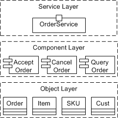

| Концепция: Service-Oriented Architecture |
 |
|
| Связанные элементы |
|---|
IntroductionThe difficulties in building enterprise-scale software solutions arise from at least four primary sources of challenges:
To develop solutions in this context requires an approach to software architecture that helps architects evolve their solutions in flexible ways and reuse existing efforts in the context of new capabilities that quickly implement business functionality even as the target infrastructure itself is evolving. To help address these needs, many organizations are looking to reorganize information resources as substantially independent, reusable functional capabilities that create an inherently adaptable environment. By describing these reusable capabilities using open, standard protocols, an organization can create self-describing services that can be used independently of the underlying technology. Technical independence allows services to be used in different contexts to achieve standardization of business processes, rules, and policies. This approach to IT systems, referred to as Service-oriented Architecture (SOA), is now widely recognized as having the potential to radically improve the responsiveness of business and IT organizations. Moving toward SOA provides many challenges to an organization. Service-oriented concepts, for example, introduce new terms and models and promote interoperability and process integration. Additionally, integrating the many underlying technology layers that constitute a SOA can be a very complex task. IT organizations often find that they require changes in approach, upgrades to their skill set, new capabilities in their development environments, and changes to solutions-design processes. To compound this, the concept of SOA is a recent phenomena and its characteristics are continuing to evolve. However, there are several clear perspectives on what is an SOA and the role of a SOA in addressing key concerns in building enterprise software solutions. SOA as a Technology InfrastructureSystems are composed of collections of services making calls on operations defined through their service interfaces. Many organizations now express their solutions in terms of services and their interconnections. The ultimate goal of adapting a SOA is to achieve flexibility for the business and within IT. A number of important technologies have been defined to support an SOA approach, most notably when the services are distributed across multiple machines and connected over the Internet or an intranet. These web-service approaches rely on intra-service communication protocols such as SOAP; allow web service interfaces (expressed in the Web Services Definition Language – WSDL) to be registered in public directories and searched in Universal Description, Discovery and Integration (UDDI) repositories; and share information in documents defined in the XML and described in standard schemas. Additionally, standards are being developed to address additional areas of policy, security, reliability, discovery, and more; this family of standards is commonly known as the "WS-* family". But SOA is no more simply a set of standards and service descriptions than object-orientation is simply a set of class hierarchies. Indeed, it is possible to create a SOA that does not use Web services technology, and it is possible to use web services technology in a way that would not be considered service-oriented. There is a great deal more that needs to be explored to understand why a service-oriented viewpoint adds value to the business, and how service-oriented solutions are designed, implemented, deployed, and managed. [more, SOA does not equal WS] SOA as a Conceptual Framework for DesignCreating solutions for SOA means rethinking the kinds of systems being built today, reconsidering the skills in an organizations, and redefining the ways in which members of teams collaborate. Most importantly, adopting a services orientation to development of solutions requires a broader review of its impact on how solutions are designed, what it means to assemble them from disparate services, and how deployed services-oriented solutions are managed and evolved. One key change in this move is that the term "application" as we have known it is becoming problematic as we move from the application as being the center of all projects to the focus being on the portfolio of services a business relies on. In this regard, we can think of this move from application-oriented projects to service-oriented projects as a move from the design of a vertically integrated set of components that make an application toward the design of a horizontal set of services. In the future, we see the term application being relegated to the description of a small layer of specific business logic close to the user interaction services that choreographs the set of business and infrastructure services that provide the bulk of the value. Gartner refers to this broader context of service-orientation as Service-Oriented Development of Applications (SODA). Gartner considers the five key tenets of SODA to be composition, adaptive process management, services-based interoperability and integration, discovery and description, and rapid application maintenance. From a tool vendor perspective, these areas relate to technology support offered in three areas: SOA Life Cycle. The "Discovery and Description" and "Rapid Application Maintenance" tenets refer to the life cycle of services and how they are found, applied, evolved, and maintained. Tool vendors are increasingly offering ways to store, catalog, search, and retrieve services. Support for the ongoing evolution of services is a critical aspect of this, leading to multiple versions of services. SOA Platform and Programming Model. The Service-Based Interoperability and Integration tenet refers to the way services can be connected, deployed, and managed within a specific runtime platform. The major platform vendors are supporting services-oriented capabilities directly as part of the middleware runtimes, and evolving their runtime programming models to surface service concepts as first class elements. As a result, solutions may be conceived, designed, implemented, and managed from a single service-based perspective. SOA Practices and Tools. The Composition and Adaptive Process management tenets refer to how services are created and assembled in the context of solving changing business needs. Tool vendors support mining existing applications to discover potential services, wrapping existing functionality to make those capabilities accessible as services, creation of new services, and connecting services by connecting behavior exposed through their interfaces. Fundamental to this is the availability of clear guidance and best practices for architecting services-oriented solutions in repeatable, predictable ways. All three of these areas are important to success in developing services-oriented solutions. They must all be addressed to meet an organization's needs for efficiently creating more flexible solutions that better align with the goals of the business. SOA as an Holistic Approach to Solutions that Bridges Business and ITOne of the primary challenges to be addressed in developing enterprise-scale solutions is to connect the domain-specific requirements expressed by business analysts with the technology-specific solutions designed by the IT organization. Typically, the connection between these two disparate worlds is not good. The two communities have very different skills, use different modeling concepts and notations (if at all), and rarely understand the mapping between those concepts. The use of a service-oriented approach is intended to help bridge this gap between the business analysts and line-of-business specialists and IT specialists such as architects, system analysts, integrators, designers and developers. In particular, the integration of process, assets, and deliverables around a core set of services is intended to connect these two different aspects of the system in a clear, precise way. SOA offers a service-focused view to help overcome these challenges: Bridging the Business-to-IT gap. It is essential to aligning the business view of activities and processes with the technology that is used to realize parts of these activities. This alignment includes the ability for business models to drive downstream development and to evolve the business models and IT solutions in combination. The service concept is critical to this alignment. Services and service-based thinking form the common ground that ties together business analysts, IT architects, integrators, and developers. The very nature of services, the level of granularity and level of encapsulation that they promote, allows them to be much closer aligned to the business process models that drive the business. Common design practices are essential to this to ensure that the concepts, work products, and tasks are synchronized across these different perspectives. Finally, having tools which can efficiently transform models representing the business intent into efficient implementations based are very important for bridging the Business-to-IT gap. Supporting the changing roles in the IT organization. The move to services thinking changes the skills and composition of teams in an organization. The focus of development is on finding, defining, managing, and assembling services, with architectural descriptions highlighting service level agreements (SLAs) and inter-service protocols. The traditional breakdown of tool functions into today's line-up of products is not appropriate to this approach. There will be a different blend of capabilities required by the different members in IT organizations. For example, the skills required by existing roles such as software architect are changing to include greater emphasis on assembly and management of services across a diverse set of service providers. Similarly, new roles such as integration specialists are emerging, with a focus is on assembling a services-based value chain in support of an organization's key business goals. Focusing on assets and reuse. Considering services as key assets in the design of systems changes an organization's view of the value of reusing these services. Earlier, we discussed the move from vertical development of a set of application components to the horizontal integration of components. One valuable aspect of this is that the services themselves become much more available for reuse. In fact, their combination into new capabilities, their composition into new services is a fundamental driver for change. In many businesses, this promise of greater reuse from a SOA justifies the cost associated with the design and development of a portfolio of services. As a result, technologies and techniques for management and governance of assets and repeatable ways to capture patterns for combining assets, become much more important. In an asset-based development approach, these assets hold critical value to the organization and must be carefully managed and administrated. The team infrastructure for managing assets takes on a key role in this approach. Increasing levels of collaboration within and across practitioner roles. Enterprise application development has always recognized that software development requires people working together and focused attention across the life-cycle on managing shared assets, work product traceability, and shared practices and processes. The collaborative nature of software development is increasing with greater geographic distribution of organizations, enhanced real-time communication among individuals in teams, and software being embedded as one part of broader systems development initiatives. Increasingly, the role of software development infrastructures will be seen as a collaborative development environment for software practitioners that encourage sharing and reuse of services across teams. SOA as an evolution of Component-Based and Object-Oriented TechniquesIn any new development in software engineering, it is very easy to assume that one can apply the same techniques and tools that have worked in previous projects. This tendency to solve new problems with outdated solutions is not new. In a similar way, as developers began to create component-based applications, they tried to address problems by using their experience with object-oriented development. With more experience, it was understood that object-oriented technology and languages are great ways to implement components, though one has to understand the trade-offs made through decisions and implementation. Trade-offs concern inheritance versus aggregation for implementing polymorphic behavior or redesign of class libraries to be able to use sets of components rather than as the base for a monolithic C++ application. In a similar way, we see components as the best way to implement services, though one has to understand that an exemplary component-based application does not necessarily make an exemplary SOA. We see a great opportunity to leverage your company's component developers and existing components, once the role played by services in application architecture is understood. The key to making this transition is to realize that a service-oriented approach implies an additional application architecture layer. The picture below demonstrates how technology layers can be applied to application architecture to provide more coarse-grained implementations as one gets closer to the consumers of the solution. The term coined to refer to this part of the system is "the application edge", reflecting the fact that a service is a great way to expose an external view of a system, with internal reuse and composition using traditional component design. One way to look at the differences between objects, components and services is the way they are coupled to their implementation; an object is tightly coupled to their programming language, components are coupled to some runtime or platform (COM, CORBA, J2EE, and such) whereas services are really only coupled to the set of standards used to describe their specification.  In general, the move from object-oriented to component-based thinking took between 6 and 18 months, as developers learned about this new technology and its requirements. Hopefully, the move to service-oriented solutions can happen more quickly. To make that happen, developers will have to understand the challenges, trade-offs, and design decisions that allow for the development and reuse of components in support of service-oriented solutions. |
© Copyright IBM Corp. 1987, 2006. Все права защищены.. |